L.A.B by Timberlab
A step-by-step walkthrough of the WordPress screens, written so you can keep it beside you the first few times.
Before you start
The site was deliberately built on standard WordPress fields rather than a paid plugin, so there is no subscription to renew and nothing that stops working if a plugin is abandoned. Everything about a project — the name, the photographs, the story, where it sits on the page — is yours to change whenever you like.
What stays with us is the design itself: the typefaces, colours, spacing, the scroll animations and the 3D floor-plan scene. Those are built in code so they stay consistent no matter what you type.
Step 1
Adding a project takes about ten minutes if everything is to hand, and a lot longer if it isn't. Before you open WordPress, have these ready:
If you don't know the year yet, leave Year completed empty and the site simply won't show it. Typing TBC, To be confirmed or a dash does the same thing — the site hides it on purpose, so it will never publish a placeholder as if it were a fact.
Step 2
The site crops every photograph to a fixed shape so the pages stay tidy no matter what is uploaded. It crops from the centre outwards, and there is no way to tell it which part of the picture to keep. So whatever you want kept needs to be near the middle of the frame.
| Where it is used | Upload at least |
|---|---|
| Cover photograph | 2400 × 1350 pixels (landscape) |
| Gallery — Wide | 2400 × 1350 pixels (landscape) |
| Gallery — Tall | 1500 × 1875 pixels (upright) |
| Gallery — Square | 1400 × 1400 pixels |
If you only remember one number: 2400 pixels on the long edge. Anything from a decent camera or a recent phone is already bigger than that. WordPress will never enlarge a small picture, so a photo that arrives at 900 pixels wide will look soft on a laptop screen and there is nothing the site can do about it.
If a photograph is missing, the site shows a neutral designed panel instead of a broken-image icon. That keeps the page looking intentional — but it also means a missing photo is easy to walk past. Always view the project on the live site once you have published it.
Step 3
Sign in at yoursite.com/wp-admin. In the black menu down the left you'll see Projects. Click it for the full list, then Add new project at the top.
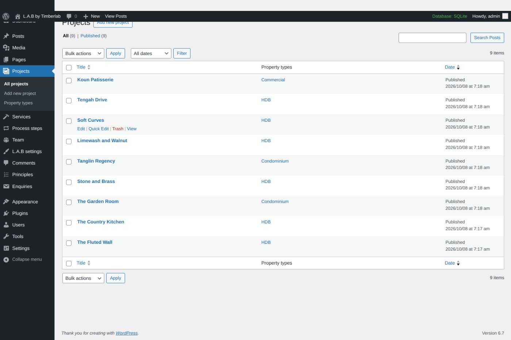
The edit screen that opens has a title box at the top, three boxes down the middle, and a column of smaller boxes on the right. We'll take them in order.
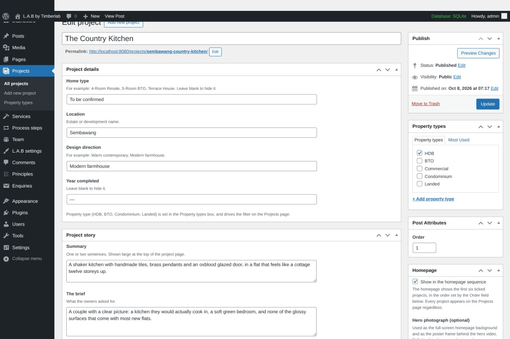
Step 4
The big empty field at the very top. This is the project name shown under its photograph on the Projects page, and it also becomes the web address, so type it properly the first time.
Four short facts. Each one is optional and each one disappears if you leave it blank.
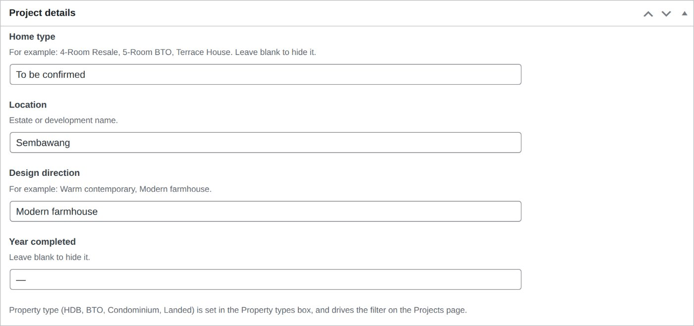
The writing. Summary is set large near the top of the project page; The brief and The response are placed between the photographs as the visitor scrolls. Design details is a list — press Add row for each material, and drag the ⠿ handle on the left to reorder them.
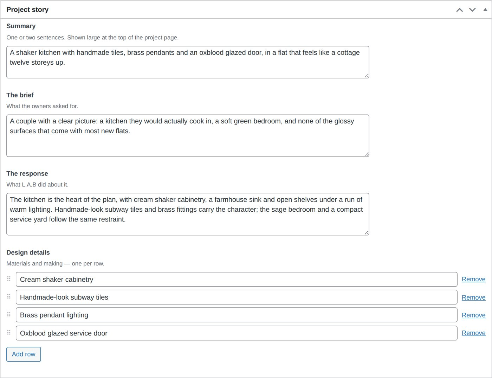
Step 5
Press Add photographs. The usual WordPress media window opens — drag files in to upload, or pick from what is already there. You can select several at once, and they'll be added in the order you picked them.
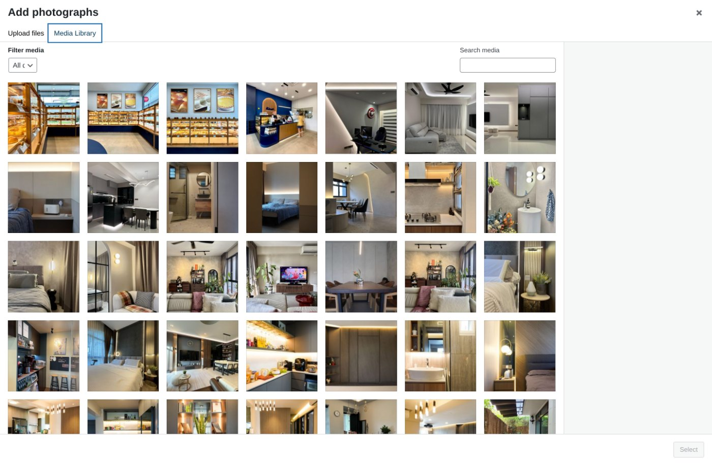
Each photograph becomes a row with three things you can change:
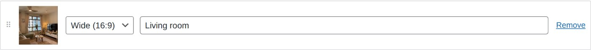
| Shape | How it is laid out |
|---|---|
| Wide (16:9) | Runs the full width of the page, on its own. Use it for the photographs you want to land hardest — a whole living room, a long kitchen run. |
| Tall (4:5) | Pairs up side by side with the next upright photo. Use it for details and upright compositions. |
| Square (1:1) | Also pairs side by side, but keeps a square crop. Useful when a photo would lose too much top and bottom as a 4:5. |
The page builds itself from these: a Wide photo always takes a full-width row alone, and any two upright photos next to each other become a two-up row. So the rhythm of the page is in your hands — alternate a wide shot with a pair and it reads well, set everything to wide and it becomes a long column.
The site spreads The brief and The response evenly through the photographs — one near the start, one around a third of the way down. You don't have to position them.
Underneath the gallery there are two optional fields. Set both and the project page gains a slider the visitor can drag to compare. Set only one and nothing appears — it needs the pair.
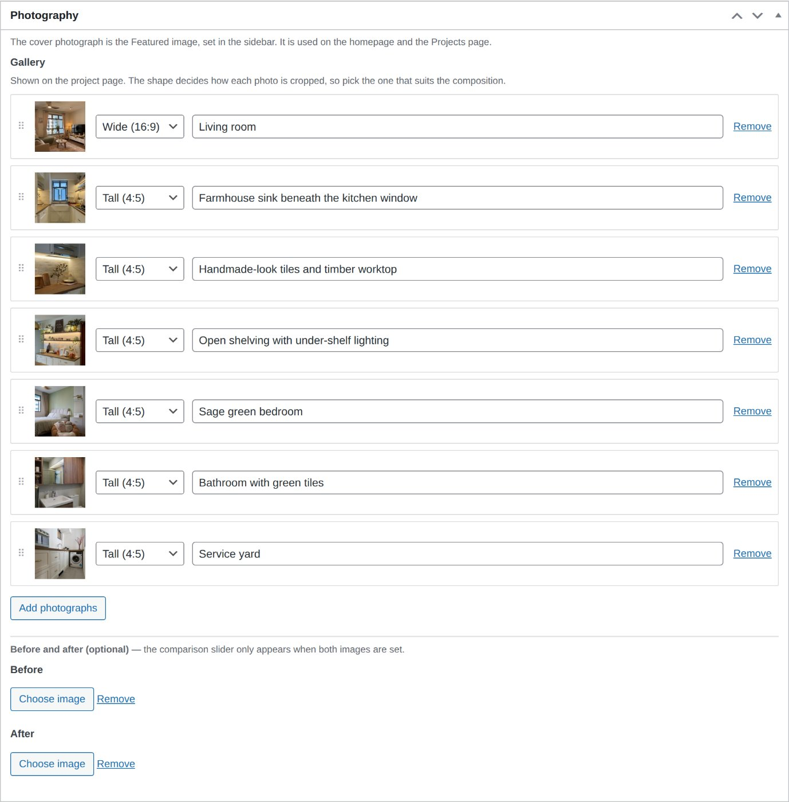
Step 6
Four small boxes, and they matter more than their size suggests.
Tick one. This is what the filter at the top of the Projects page uses, so a project with nothing ticked can only be found under All.
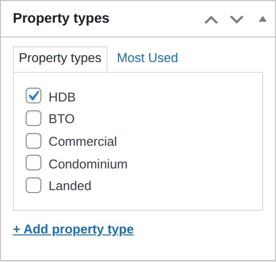
The single photo that represents the project on the Projects page and the homepage. It is cropped to a square on the Projects page, so choose one that still reads well square.
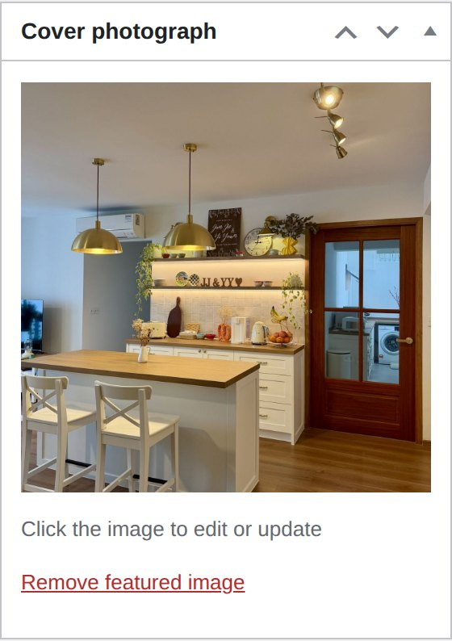
Tick Show in the homepage sequence to put the project in the run of featured work on the front page. The homepage shows the first six ticked projects. Every project appears on the Projects page whether or not this is ticked.
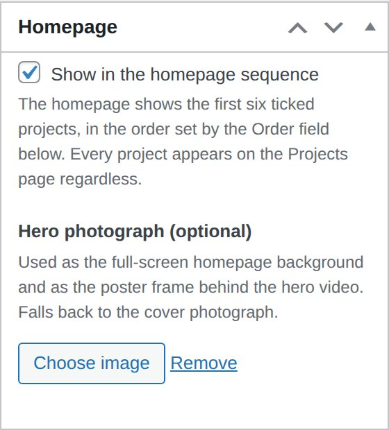
A number that decides where the project sits. Lower numbers come first. This controls both the Projects page and the homepage sequence, so a new project you want at the front should get a number lower than everything else — or renumber the others.
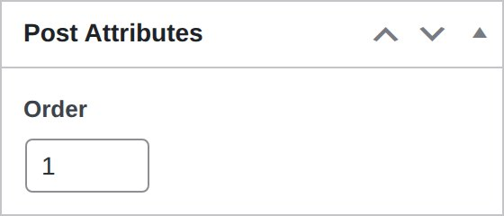
Then press Publish. Open the project on the live site and read it through — it is the only reliable way to catch a photo that didn't attach or a crop that cut something important.
Worth knowing
There is a button under L.A.B settings called Import content. It was for setting the site up the first time. Don't press it again. It won't damage your projects, but it does put the main menu back the way it started, which you'd then have to undo.
You can reword them freely. Don't add a fifth or delete one — the 3D floor-plan animation on the homepage is choreographed to exactly four, and the picture would drift out of step with the words. WordPress will warn you if the count changes. If you want a different number, tell us and we'll re-time the scene.
The looping film behind the homepage headline can be swapped under L.A.B settings, but it needs four files — two formats at two sizes — so that it plays on every browser and doesn't burn through a visitor's mobile data. Send us the footage and we'll prepare them.
Beyond projects, these are all yours: Services, Process steps, Principles, Team, the headings on each page, and — under L.A.B settings — every piece of wording on the homepage, the studio figures, your address, phone, email, opening hours, social links and the footer. Enquiries from the contact form are saved in WordPress as well as emailed, so nothing is lost if an email goes astray.
Once you've done it once, this is all you need.
If anything looks wrong
Send us a screenshot and the project name. Nothing you can do on these screens will break the design — the worst case is a photo cropped somewhere you didn't want, and that is a two-minute fix.